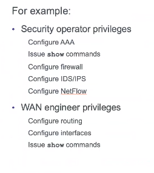

2020/06/10 - 第1回
内容
ルータのセキュリティテクノロジーパッケージライセンスの有効化
> enable
# configure terminal
(config)# license boot module c1900 technology-package securityk9
〜略
ACCEPT? [yes/no]: yes
(config)#end
#copy running-config startup-config
Destination filename [startup-config]?
# reload
〜略
# show version
〜略
----------------------------------------------------------------
Technology Technology-package Technology-package
Current Type Next reboot
-----------------------------------------------------------------
ipbase ipbasek9 Permanent ipbasek9
security securityk9 Evaluation securityk9
~~~~~~~~~~~~~~~~~~~~~~~~~~~~~~~~~~~~~~~~~~~~~~~~~~~~~`
data disable None None
Configuration register is 0x2102
ルータパスワードの最小パスワード長を設定
security passwordsコマンドを使用し、最低10文字のパスワードの設定をする
R1(config)#security passwords min-length 10
特権暗号化パスワードの設定
両方のルータで特権暗号化パスワードを設定する。タイプ9(SCRYPT)ハッシュアルゴリズムを使用する。
enable secret class
enable algorithm-type scrypt secret cisco12345
下の文はPacket Tracerでは設定できない
イネーブルシークレットパスワードを設定すると、ルータが攻撃によって侵害されるのを防ぐのにどのように役立ちますか。
演習
コンソール、aux, vtyのパスワードをそれぞれ以下に設定する
- コンソール: ciscoconpass
- aux: ciscoauxpass
- vty: ciscovtypass
- 同期ロギングも設定
line vty 0 15
password ciscovtypass
login
transport input telnet
exit
line con 0
password ciscoconpass
login
exit
line aux 0
password ciscoauxpass
login
exit
パスワード確認
show run
保存されているパスワードを暗号化するコマンド
Router(config)# service password-encryption
暗号化パスワードの前に表示される数字5や7は何を表すものか
- 4: SHA-256
- 5: MD5
- 6: AES
- 7: 脆弱
- 8: PBKDF2
- 9: SCRYPT
HackMD 抜粋(松山)
通常のデバイスではsecretコマンドでは5,passwordコマンドで0が自動的に適用される
なおpassword 7コマンドは無効コマンドになってるっぽい。
service pass-encryptionでpass 0で設定したものを暗号化することでpass 7が適用される。
バージョンや機器によっては4かも
バナーメッセージを表示
MOTDバナーメッセージ Unauthorized access strictly prohibited! を表示するコマンドを実行。
(config)#banner motd $Unauthorized access strictly prohibited!$
ログインユーザの設定
username <ユーザ名> password <パスワード>
アルゴリズムを選ぶ場合(Packet Tracer不可)
username <ユーザ名> algorithm-type ?
上記コマンドのアルゴリズム指定
ルーターにローカルユーザを登録、ログイン時に使用するように設定を追加
Router(config)# username user01 password user01pass
Router(config)# line console 0
Router(config-line)# login local
Router(config-line)# end
Router# exit
VTY回線でも設定可能。
ログインしているユーザの確認
R1#show users
Line User Host(s) Idle Location
* 0 con 0 sakabe idle 00:00:00
134 vty 0 sakabe idle 00:00:05 10.2.2.1
Interface User Mode Idle Peer Address
vty: telnet 脆弱性マシマシ -> ssh
ルータにSSHでアクセスする設定
- ドメイン名の設定
- クライアントからアクセスするユーザの特権レベルの指定
- SSHでの着信を許可する
- 暗号化の鍵を生成
- SSHのバージョン設定
- タイムアウト設定
- 認証リトライ回数設定
Router(config)# ip domain-name ccnasecurity.com
Router(config)# username admin privilege 15 secret cisco12345
余談: Packet Tracerには入らないが、以下がアルゴリズムまで指定したコマンド。
R1(config)# username admin privilege 15 algorithm-type scrypt secret cisco12345
続き
Router(config)# line vty 0 4
Router(config-line)# privilege level 15
Router(config-line)# login local
Router(config-line)# transport input ssh
Router(config-line)# exit
Router(config)# crypto key generate rsa general-keys modulus 1024
Router(config)# ip ssh version 2
Router(config)# ip ssh time-out 90
Router(config)# ip ssh authentication-retries 2
Router(config)# end
Router# copy running-config startup-config
modulus: 係数
PCからSSH接続
ssh -l <ユーザ名> <アドレス>
クライアントからルータへ設定ファイルを転送する方法
- SSH接続し、設定ファイルの内容をコピー&ペースト > 即座にrunning-configに反映される
- リモートホストにファイルを安全にコピーする -> SCP > Windowsでの有効化 > - Git Bashをインストールする > - Tera Termを使用する
ルータをSCPサーバにする
- AAAを有効化する
- ローカルで認証と認可の設定をする
- SCPを有効化する
設定
Router(config)# aaa new-model
Router(config)# aaa authentication login default local
Router(config)# aaa authorization exec default local
Router(config)# ip scp server enable
Router(config)# end
Router# copy running-config flash:
Destination filename [running-config]? R1-config
R1#show flash:
System flash directory:
File Length Name/status
4 1747 R1-config
3 33591768 c1900-universalk9-mz.SPA.151-4.M4.bin
2 28282 sigdef-category.xml
1 227537 sigdef-default.xml
[33849334 bytes used, 221894666 available, 255744000 total]
249856K bytes of processor board System flash (Read/Write)
copyコマンドの指定
copy running-config <指定>
flash: Copy to flash file
ftp: Copy to current system configuration
scp: Copy to scp: file system
startup-config Copy to startup configuration
tftp: Copy to current system configuration
scp:を指定すると、Address or name of remote host []?と聞かれるので、コピーしたいアドレスを指定する
Router3での操作(失敗してるけど)
Router# copy scp: flash:
Address or name of remote host []? 192.168.1.1
Source username [R3]? user01
Source filename []? R1-config
Destination filename [R1-config]?
Password:
Unauthorized access strictly prohibited!
%Error opening scp://*****@192.168.1.1/R1-config (No such file or directory)
Topic 2.2.2:
- Configuring Role-Based CLI
ユーザ(役割)によってコマンドの使用権限(View)を設定する。以下は例。

Packet Tracerで次回設定。